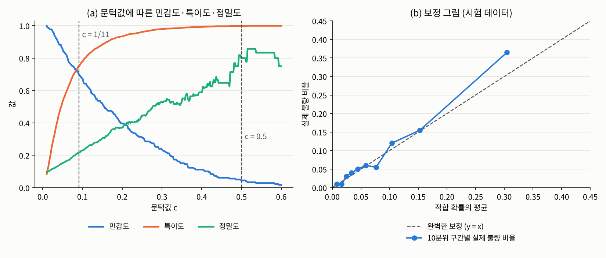

4.4 확률에서 분류로
4장 로지스틱 회귀 · 문턱값, 혼동 행렬, 보정
들어가며
4.3절까지는 로지스틱 회귀의 계수를 구하고 해석하는 데 집중했습니다. 그런데 로지스틱 회귀를 실제로 쓰는 많은 경우, 사람들이 궁금해하는 것은 계수보다 이 관측값이 \(1\)인가 \(0\)인가입니다. 이 메일은 스팸일까요? 이 부품은 불량일까요? 이런 문제를 이진 분류(binary classification)라고 합니다.
여기서 꼭 짚어 둘 점이 있습니다. 로지스틱 회귀가 내놓는 것은 \(0\) 또는 \(1\)이라는 꼬리표가 아니라 \(\hat{\pi}(x) \in (0, 1)\)이라는 확률입니다. 확률을 꼬리표로 바꾸는 것은 모형 바깥에서 우리가 따로 내리는 결정입니다. 이번 글에서는 그 결정을 어떻게 내리고, 그 결과를 어떻게 평가하는지 살펴봅니다.
문제: 드문 불량품을 가려내기
문제 상황
어떤 공장에서 부품마다 생산 당시 기계 온도의 편차(표준화된 값) \(x_1\)과 야간 생산 여부 \(x_2\)를 기록하고, 검사 결과 불량이면 \(y = 1\), 정상이면 \(y = 0\)으로 적었습니다. 불량은 열 개 중 하나 정도로 드뭅니다. 부품 2000개로 로지스틱 회귀를 적합한 뒤, 적합에 쓰지 않은 다른 부품 2000개에서 불량품을 얼마나 잘 가려내는지 확인하려고 합니다. 데이터는 참값이 \(\beta = (-3.2, 1.2, 0.8)\)인 로지스틱 회귀 모형에서 뽑았습니다.
가장 흔한 방법은 적합 확률이 \(0.5\)를 넘으면 불량, 아니면 정상으로 분류하는 것입니다. 그렇게 해서 정확도가 \(91\%\)가 나왔다면 좋은 분류기일까요?
접근 아이디어
\(0.5\)라는 숫자에는 특별한 근거가 없습니다. “불량일 가능성이 정상일 가능성보다 크면 불량으로 분류한다”는 것은 두 종류의 실수, 곧 정상품을 불량으로 잘못 거르는 것과 불량품을 놓치는 것이 똑같이 나쁠 때의 규칙입니다. 불량품 하나를 놓쳐서 고객에게 보내는 비용이 정상품 하나를 다시 검사하는 비용보다 훨씬 크다면, 확률이 \(0.5\)보다 꽤 낮아도 일단 불량으로 의심하는 편이 낫습니다.
또 정확도 하나만으로는 이런 차이를 볼 수 없습니다. 불량이 \(9\%\)뿐이라면 모든 부품을 정상이라고 해도 정확도가 \(91\%\)입니다. 그러니 두 종류의 실수를 따로 세는 지표가 필요합니다.
필요한 개념들
분류 규칙을 평가할 때는 관측값을 실제 값과 예측값에 따라 네 칸으로 나눕니다. 이 표를 혼동 행렬(confusion matrix)이라고 합니다.
| 예측 \(\hat{y} = 1\) | 예측 \(\hat{y} = 0\) | |
|---|---|---|
| 실제 \(y = 1\) | 참 양성 TP (true positive) | 거짓 음성 FN (false negative) |
| 실제 \(y = 0\) | 거짓 양성 FP (false positive) | 참 음성 TN (true negative) |
각 지표가 묻는 질문은 다릅니다. 민감도는 “실제 불량품 가운데 몇 개를 잡아냈는가”, 특이도는 “실제 정상품 가운데 몇 개를 정상으로 통과시켰는가”, 정밀도는 “불량이라고 판정한 것 가운데 몇 개가 정말 불량인가”를 묻습니다. 문턱값 \(c\)를 낮추면 더 많은 부품을 불량으로 판정하므로 민감도는 올라가고 특이도는 내려갑니다. 어느 한 지표만 보고는 분류기를 평가할 수 없는 이유입니다. 문턱값을 \(0\)에서 \(1\)까지 움직이며 민감도와 \(1 - \text{특이도}\)를 함께 그린 곡선을 ROC 곡선(receiver operating characteristic curve)이라고 부르는데, 이 또한 같은 맞교환을 한 그림에 담은 것입니다.
그렇다면 문턱값은 어떻게 정해야 할까요? 두 종류의 실수에 드는 비용을 알면 답이 정해집니다.
두 비용이 같으면 문턱값은 \(1/2\)이 됩니다. 즉 \(c = 0.5\)는 “두 실수가 똑같이 나쁘다”는 특수한 가정에서 나오는 값이지, 로지스틱 회귀 모형에서 나오는 값이 아닙니다. 불량품을 놓치는 비용이 열 배라면 \(c = 1/11 \approx 0.09\)입니다.
다만 이 정리는 참된 확률 \(\pi(x)\)를 안다고 가정합니다. 실제로는 그 자리에 적합 확률 \(\hat{\pi}(x)\)를 넣어야 하므로, 적합 확률이 확률로서 믿을 만한지를 따로 확인해야 합니다.
말로 하면 “\(30\%\)라고 예측한 관측값들을 모아 보면 실제로 그중 \(30\%\) 정도가 \(1\)이어야 한다”는 것입니다. 일기예보에서 강수 확률이 \(30\%\)인 날들을 모았을 때 실제로 열흘 중 사흘쯤 비가 와야 그 예보를 믿을 수 있는 것과 같습니다. 이것을 확인하려면 적합 확률이 비슷한 관측값끼리 묶어 실제 비율과 비교하면 됩니다.
마지막으로, 이 모든 지표는 적합에 쓰지 않은 데이터에서 계산해야 합니다. 적합에 쓴 데이터에서 성능을 재면 모형이 그 데이터의 우연한 특징까지 외운 만큼 성능이 부풀려지기 때문입니다. 3.4절에서 학습 데이터의 \(R^2\)와 시험 데이터의 \(R^2\)가 크게 달랐던 것과 같은 이유입니다. 그래서 데이터를 학습 데이터(training set)와 시험 데이터(test set)로 나눕니다.
해결
학습 데이터로 계수를 추정한 뒤, 시험 데이터에서 “모두 정상으로 예측”하는 규칙과 세 가지 문턱값의 성능을 비교해 보겠습니다.
import numpy as np
def irls(X, y, tol=1e-8, max_iter=50):
beta = np.zeros(X.shape[1])
for _ in range(max_iter):
pi = 1 / (1 + np.exp(-X @ beta))
step = np.linalg.solve(X.T @ (X * (pi * (1 - pi))[:, None]), X.T @ (y - pi))
beta = beta + step
if np.max(np.abs(step)) < tol:
return beta
raise RuntimeError("수렴하지 않았습니다. 분리 여부를 확인하세요.")
def simulate(n):
temp = np.random.normal(size=n) # 기계 온도의 표준화된 편차
night = np.random.binomial(1, 0.3, size=n) # 야간 생산이면 1
X = np.column_stack([np.ones(n), temp, night])
y = np.random.binomial(1, 1 / (1 + np.exp(-X @ np.array([-3.2, 1.2, 0.8]))))
return X, y
np.random.seed(1557)
X_train, y_train = simulate(2000) # 적합에 쓰는 데이터
X_test, y_test = simulate(2000) # 평가에만 쓰는 데이터
beta_hat = irls(X_train, y_train)
pi_test = 1 / (1 + np.exp(-X_test @ beta_hat))
print(f"beta_hat = {np.round(beta_hat, 3)}")
print(f"불량 비율: 학습 {y_train.mean():.3f}, 시험 {y_test.mean():.3f}")
def report(name, pred, y):
TP = np.sum((pred == 1) & (y == 1)); TN = np.sum((pred == 0) & (y == 0))
FP = np.sum((pred == 1) & (y == 0)); FN = np.sum((pred == 0) & (y == 1))
prec = f"{TP / (TP + FP):.3f}" if TP + FP > 0 else "정의 안 됨"
print(f"{name}: TP={TP:3d} FP={FP:3d} FN={FN:3d} TN={TN:4d} | 정확도 {(TP + TN) / len(y):.3f}, "
f"민감도 {TP / (TP + FN):.3f}, 특이도 {TN / (TN + FP):.3f}, 정밀도 {prec}")
report("모두 정상으로 예측", np.zeros(len(y_test), dtype=int), y_test)
for c in [0.5, 0.2, 0.1]:
report(f"문턱값 c = {c} ", (pi_test > c).astype(int), y_test)beta_hat = [-3.225 1.088 0.965]
불량 비율: 학습 0.085, 시험 0.089
모두 정상으로 예측: TP= 0 FP= 0 FN=179 TN=1821 | 정확도 0.910, 민감도 0.000, 특이도 1.000, 정밀도 정의 안 됨
문턱값 c = 0.5 : TP= 8 FP= 2 FN=171 TN=1819 | 정확도 0.913, 민감도 0.045, 특이도 0.999, 정밀도 0.800
문턱값 c = 0.2 : TP= 71 FP=121 FN=108 TN=1700 | 정확도 0.885, 민감도 0.397, 특이도 0.934, 정밀도 0.370
문턱값 c = 0.1 : TP=121 FP=403 FN= 58 TN=1418 | 정확도 0.769, 민감도 0.676, 특이도 0.779, 정밀도 0.231결과는 앞의 걱정을 그대로 보여 줍니다.
- 정확도는 거의 아무것도 말해 주지 않습니다. 아무것도 하지 않는 “모두 정상” 규칙의 정확도가 \(0.910\)이고, \(c = 0.5\)인 로지스틱 회귀의 정확도는 \(0.913\)으로 거의 같습니다. 그런데 \(c = 0.5\) 규칙은 불량품 179개 가운데 8개만 잡아냈습니다(민감도 \(0.045\)). 불량이 드물면 적합 확률이 \(0.5\)를 넘는 부품 자체가 거의 없기 때문입니다.
- 문턱값을 낮추면 맞교환이 일어납니다. \(c = 0.1\)로 낮추면 불량품의 \(68\%\)를 잡아내지만, 그 대가로 정상품 403개를 잘못 거르게 되어 정확도는 오히려 \(0.769\)로 떨어집니다. 정확도가 가장 높은 규칙이 가장 쓸모 있는 규칙은 아닙니다.
- “모두 정상” 규칙의 정밀도는 정의되지 않습니다. 불량이라고 판정한 부품이 하나도 없어서 정밀도의 분모가 \(0\)이기 때문입니다.
그렇다면 어떤 문턱값을 써야 할까요? 정리 4.4.3을 쓰기 전에 먼저 적합 확률이 잘 보정되었는지 확인하고, 불량품을 놓치는 비용이 정상품을 잘못 거르는 비용의 10배라고 가정하고 문턱값에 따른 시험 데이터의 총비용을 계산해 보겠습니다.
# 보정(calibration): 적합 확률이 비슷한 관측값끼리 묶어 실제 불량 비율과 비교
bins = np.quantile(pi_test, np.linspace(0, 1, 6)) # 적합 확률의 5분위로 나눔
idx = np.clip(np.searchsorted(bins, pi_test, side="right") - 1, 0, 4)
for k in range(5):
m = idx == k
print(f"구간 {k + 1}: 적합 확률 평균 {pi_test[m].mean():.3f}, 실제 불량 비율 {y_test[m].mean():.3f} ({m.sum()}개)")
# 불량을 놓치는 비용이 정상을 잘못 거르는 비용의 10배일 때, 문턱값에 따른 총비용
cost_FN, cost_FP = 10, 1
grid = np.round(np.arange(0.02, 0.51, 0.01), 2)
costs = [cost_FN * np.sum((pi_test <= c) & (y_test == 1)) + cost_FP * np.sum((pi_test > c) & (y_test == 0)) for c in grid]
best = int(np.argmin(costs))
print(f"총비용이 가장 작은 문턱값: c = {grid[best]:.2f} (총비용 {costs[best]}), 이론값 1/(1 + 10) = {1 / 11:.3f}")
print(f"c = 0.5일 때 총비용 {costs[list(grid).index(0.5)]}")구간 1: 적합 확률 평균 0.012, 실제 불량 비율 0.010 (400개)
구간 2: 적합 확률 평균 0.029, 실제 불량 비율 0.035 (400개)
구간 3: 적합 확률 평균 0.051, 실제 불량 비율 0.055 (400개)
구간 4: 적합 확률 평균 0.090, 실제 불량 비율 0.087 (400개)
구간 5: 적합 확률 평균 0.229, 실제 불량 비율 0.260 (400개)
총비용이 가장 작은 문턱값: c = 0.10 (총비용 983), 이론값 1/(1 + 10) = 0.091
c = 0.5일 때 총비용 1712다섯 구간 모두에서 적합 확률의 평균과 실제 불량 비율이 가깝습니다. 모형이 옳고 표본이 충분하므로 적합 확률이 잘 보정되어 있고, 따라서 정리 4.4.3을 믿고 쓸 수 있습니다. 실제로 시험 데이터에서 총비용이 가장 작은 문턱값은 \(c = 0.10\)으로, 이론값 \(1/11 \approx 0.091\)에 가깝습니다. 이때의 총비용 \(983\)은 \(c = 0.5\)를 쓸 때의 \(1712\)보다 40% 넘게 작습니다.

그림 (a)는 문턱값을 움직일 때 민감도와 특이도가 서로 반대로 움직이는 모습을 보여 줍니다. \(c = 0.5\)는 특이도를 거의 \(1\)로 지키는 대신 민감도를 거의 포기한 지점이고, \(c = 1/11\)은 두 지표가 비슷해지는 쪽에 있습니다. 어느 지점이 좋은지는 데이터가 아니라 두 실수의 비용이 정합니다. 그림 (b)는 10개 구간으로 더 잘게 나눈 보정 그림으로, 점들이 대각선 근처에 모여 있습니다. 만약 점들이 대각선에서 체계적으로 벗어난다면, 예를 들어 모형에서 중요한 변수나 비선형 효과가 빠졌다면, 적합 확률을 그대로 정리 4.4.3에 넣어서는 안 됩니다.
정리
이번 글에서 다룬 내용을 정리하면 다음과 같습니다.
| 질문 | 답 |
|---|---|
| 로지스틱 회귀가 내놓는 것 | 꼬리표가 아니라 확률 \(\hat{\pi}(x)\) |
| 확률을 꼬리표로 바꾸는 법 | 문턱값 \(c\)를 정해 \(\hat{y} = \mathbf{1}\{\hat{\pi} > c\}\) |
| 문턱값을 정하는 근거 | 두 실수의 비용: \(c = C_{FP}/(C_{FP} + C_{FN})\). \(c = 0.5\)는 두 비용이 같을 때 |
| 성능을 재는 법 | 시험 데이터의 혼동 행렬에서 민감도, 특이도, 정밀도를 함께 봄 |
| 불균형 데이터의 함정 | 정확도는 “모두 다수 범주로 예측”하는 규칙과 구별되지 않을 수 있음 |
| 확률 자체의 점검 | 보정: 적합 확률이 비슷한 관측값끼리 묶어 실제 비율과 비교 |
분류 성능은 모형을 예측의 도구로 평가하는 방법입니다. 그런데 3장에서는 잔차제곱합과 \(R^2\)로 모형이 데이터에 얼마나 잘 맞는지를 재고, 두 모형 가운데 어느 쪽이 나은지를 비교했습니다. 로지스틱 회귀에서는 무엇이 잔차제곱합의 역할을 할까요? 그리고 잔차는 어떻게 정의하고 읽어야 할까요? 4.5절에서 이 질문을 다룹니다.
연결되는 개념
- \(\leftarrow\) 이전 개념: 4.3 분리: 최대우도 추정값이 없을 때
- \(\rightarrow\) 다음 개념: 4.5 이탈도와 잔차